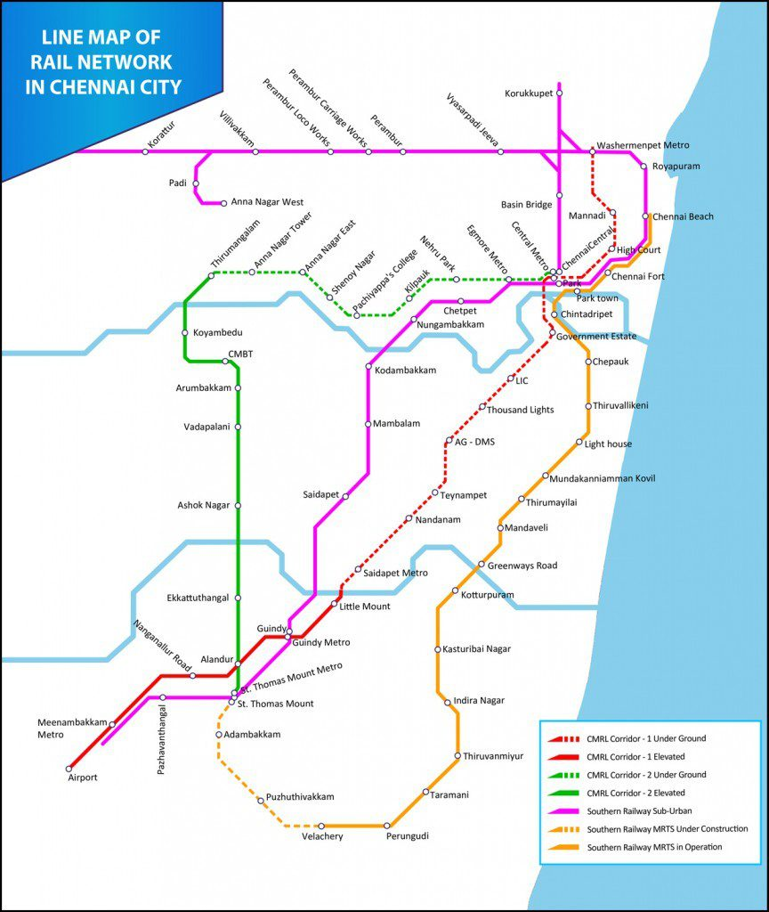

Chennai Metro Phase 2 will add 118.9 km of new lines with 128 stations across three corridors. The corridors are: Madhavaram to SIPCOT (Corridor 3), Lighthouse to Poonamallee Bypass (Corridor 4), and Madhavaram to Sholinganallur (Corridor 5).
The "Pink Line" in Chennai Metro's Phase 2 project refers to Corridor 3 which is also known as the Purple Line. It runs from Madhavaram Milk Colony to SIPCOT (Siruseri). The route is approximately 45.4 km long and includes 47 stations, with both underground and elevated sections.
The Chennai Metro Phase 2 Yellow Line, also known as Line 4, is under construction and will run from Lighthouse to Poonamallee Bypass. It's part of the larger Phase 2 expansion, which includes three corridors totaling 118.9 km with 128 stations. The Yellow Line specifically will be approximately 26.1 km long and will feature a mix of elevated and underground stations.